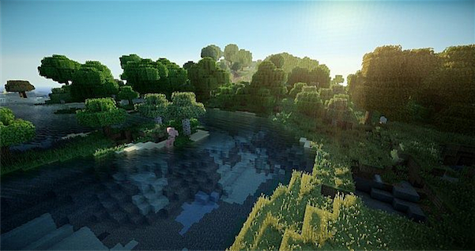
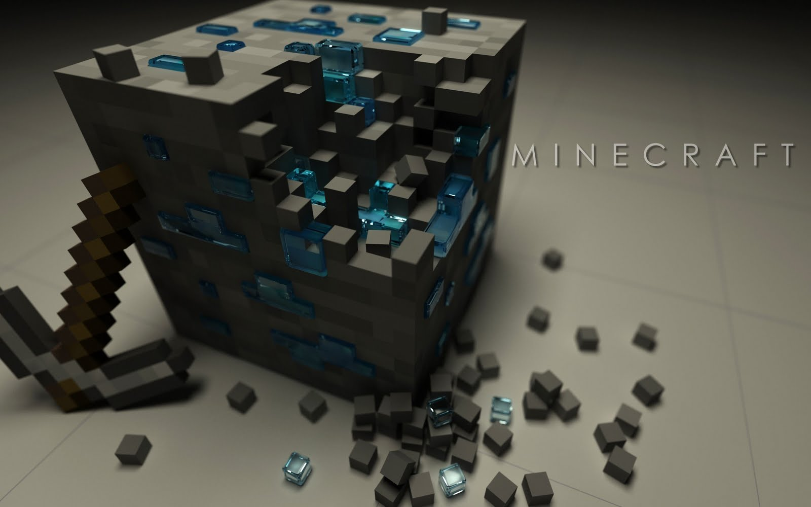
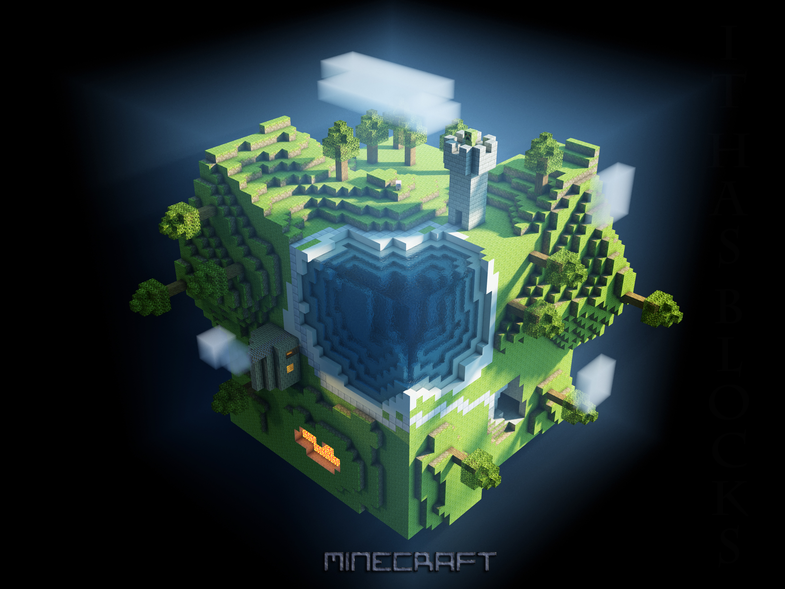
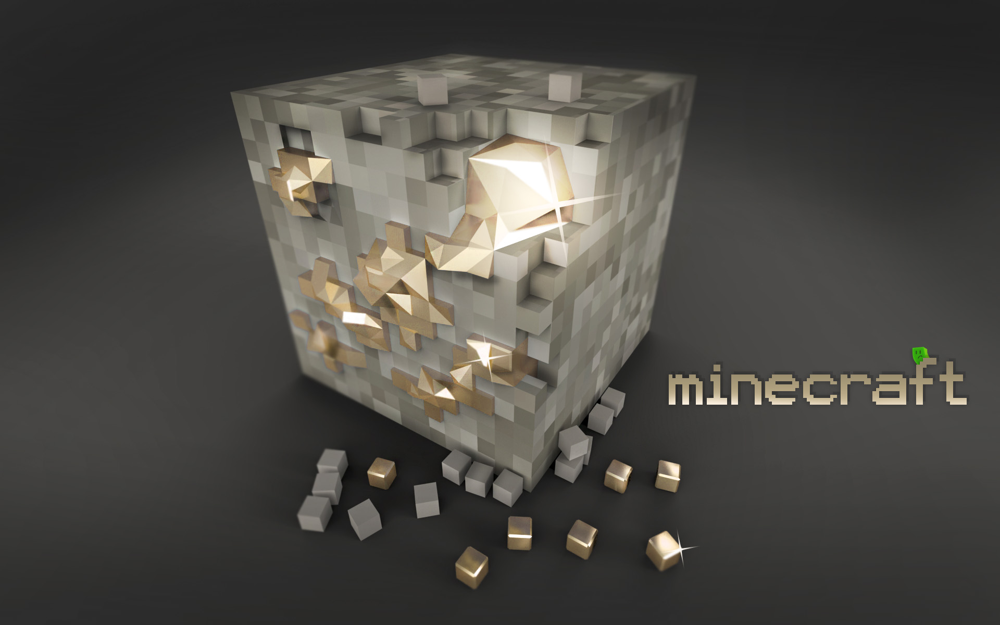

More things to do in minecraft
Gallery
- 
- 
- 

- 
You can download different mods to create amazing realistic textures, shadows, animals, and skins. It really is amazing what you can do and download from the internet these days. People all around the world develope different mods everyday to create a different compelling experience for everyone of different Minecraft levels. It is a completely adaptable game that is really limited only to what you can imagine, or to what your computer can handle before crashing.